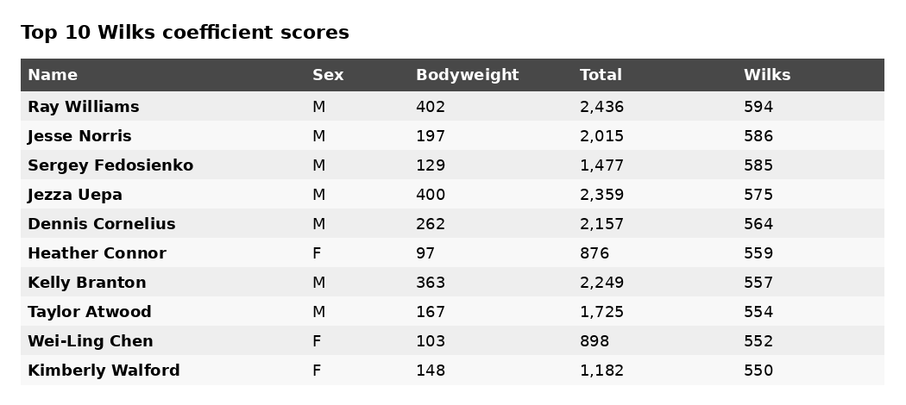
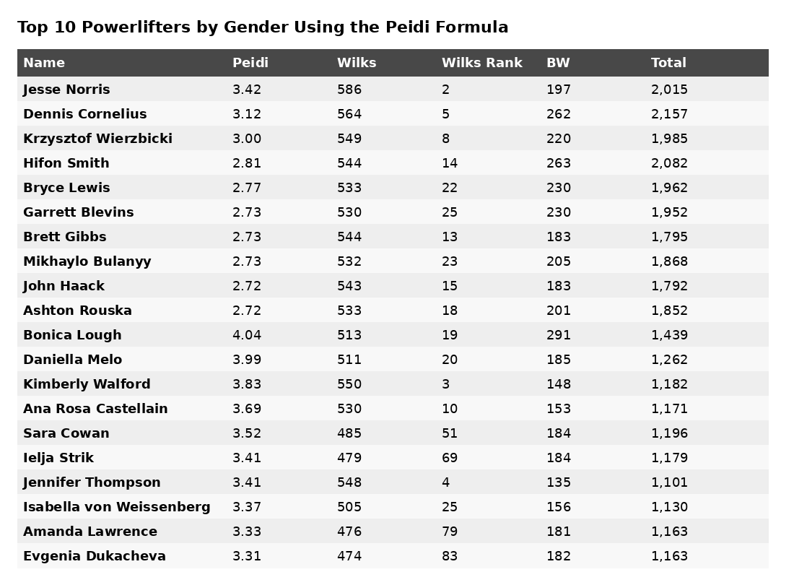
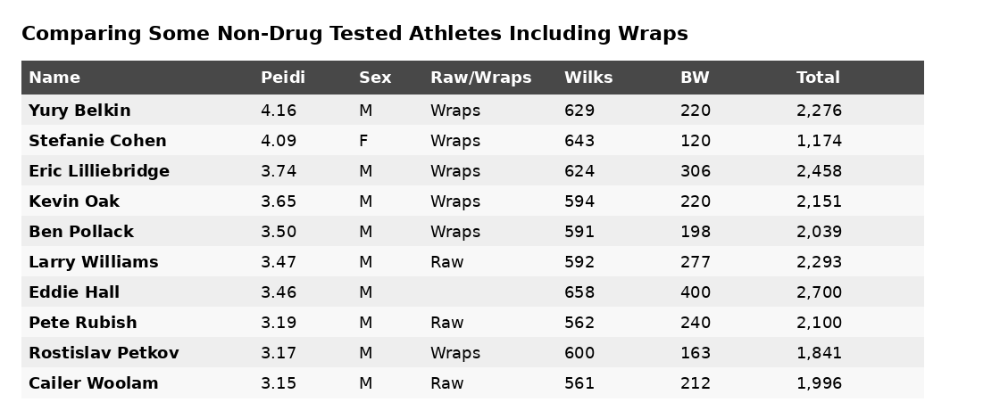

The Wilks Formula Is Shitty
May 2018
In powerlifting, the Wilks Formula is by far the most popular standard of comparison for strength across different weight classes and genders. Recently, people have been complaining that this formula favors underrepresented classes (i.e. super-lights and super-heavies). I very much agree with this sentiment.
Below are the all-time top 10 Wilks coefficient scores for raw lifters based on drug-tested performances. Extreme weight classes are highlighted in yellow.

The #1 lifter, Ray Williams, weighs 402 lb and the #3 lifter, Sergey Fedosienko, is 4'9". Both compete in classes with very little participation, yet they rank among the greatest lifters ever according to Wilks.
Coincidence? Or a broken formula?

Existing Alternatives
The simplest measure of relative strength is bodyweight multiple (total/bodyweight), but this dramatically favors lighter lifters. Lamar Gant deadlifted 661 lb at 132 lb bodyweight for a 5x multiple, while Eddie Hall deadlifted 1,102 lb at 440 lb bodyweight for only a 2.5x multiple.
No way in hell is Lamar Gant twice as impressive a deadlifter as Eddie Hall.
A Better Formula
Rather than asking who lifted the most weight relative to bodyweight, I would ask a different question:
Which athlete most outperformed their peers?
Statistically, that means identifying which athlete performed the greatest number of standard deviations above the mean within their group.
On to the Math


After examining the data, I found that a simple linear model explained most of the relationship between bodyweight and total. The more complicated polynomial models added complexity without materially improving fit.
Results

Overall, the rankings produced by the new formula seem substantially more reasonable than Wilks.
Comparing Non-Tested Athletes

Raw Data Used
Thanks to OpenPowerlifting for making the data freely available.